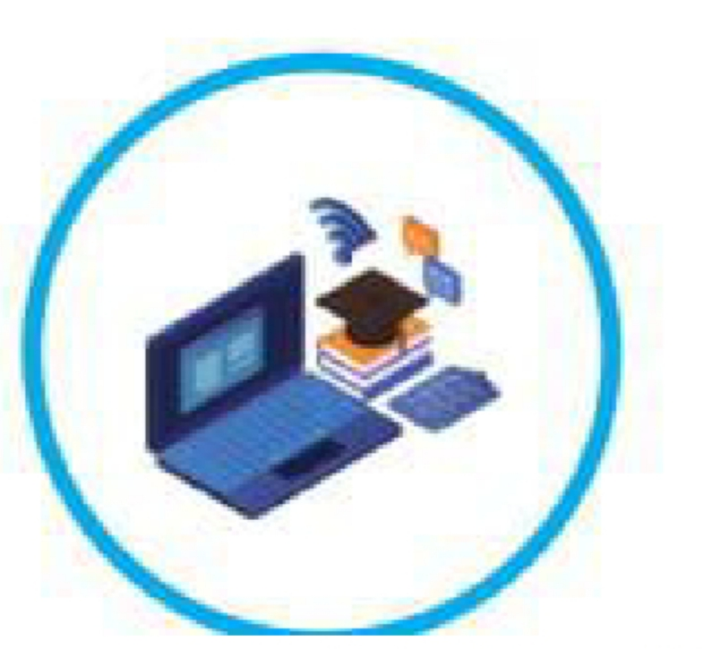
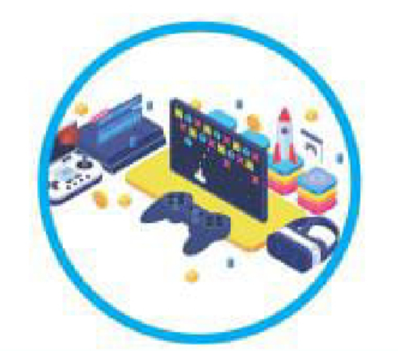

الدرس الأول: مقدمة إلى شبكات الحاسوب
Introduction to Computer Networks
المهارات الرقمية - الصف السابع
🔊 القراءة الصوتية للدرس
اضغط على «قراءة الدرس» للاستماع إلى المحتوى.
مقدمة إلى شبكات الحاسوب
وضح المقصود بشبكة الحاسوب (Computer Network)

لتبادل البيانات ومشاركة الموارد (مثل الطابعات).
أعط أمثلة على هذه الشبكات
تنتشر شبكات الحاسوب في كل مكان من حولنا؛ ففي المنزل، قد نجد شبكة صغيرة تربط جهاز الحاسوب والهاتف والموجه معًا. وفي المدرسة، ربما توجد شبكة أكبر تمكّن أجهزة الحاسوب في مختبر المدرسة وأجهزة الحاسوب في المكتبة من تبادل البيانات ومشاركة الموارد. وكذا الحال بالنسبة إلى أنظمة البنوك والمستشفيات وغيرها.نتائج ظهور شبكات الحاسوب وتطورها على مر السنين
مثل: الشبكة العنكبوتية (World Wide Web)، وشبكة الإنترنت (Internet).
وضح المقصود بشبكة الإنترنت (Internet)
مزايا شبكات الحاسوب
- مشاركة الملفات والبيانات.
- مشاركة الموارد.
- الاتصال.
- التعلم.
- الترفيه.
فوائد مشاركة الملفات والبيانات داخل الشبكة
يمكن مشاركة الملفات (Files) - على اختلاف أنواعها - عن طريق أجهزة الحاسوب في الشبكة؛ ما يسهل الوصول إليها، ويتيح تناقلها بين الأجهزة بصورة جماعية.

فوائد مشاركة الموارد
يمكن مشاركة الأجهزة في شبكات الحاسوب، مثل الطابعات ووحدات التخزين؛ ما يقلل من التكلفة المادية ويزيد من مستوى الكفاءة.

مثال على تقليل التكلفة المادية عند مشاركة الموارد داخل الشبكة
فبدلًا من وصل طابعة بكل جهاز حاسوب، يمكن استخدام طابعة واحدة في شبكة الحاسوب بحيث تستفيد منها جميع الأجهزة المرتبطة بالشبكة.
يمكن للمستخدمين في شبكة الحاسوب التواصل معًا بسهولة؛ سواء كانوا في المكان نفسه، أو في أنحاء مختلفة من العالم. ويتم الاتصال بطرائق عديدة، مثل البريد الإلكتروني، والمراسلة الفورية، والمؤتمرات المرئية.

- توفر شبكات الحاسوب كثيرًا من مصادر التعلم الرقمية المتنوعة.
- تسهل الوصول إلى المعلومات.
- تعزز التعلم التعاوني التفاعلي، والتعلم الذاتي.
- تسهم في توفير فرص التعلم المستمر.

تتيح شبكات الحاسوب مشاركة محتويات ترفيهية مثل ملفات الموسيقى والأفلام، وألعاب الفيديو.

أمثلة على محتويات ترفيهية تتيح مشاركتها شبكات الحاسوب
ملفات الموسيقى والأفلام، وألعاب الفيديو.
مخاطر استخدام شبكات الحاسوب
- الاختراقات وتهديد أمان المعلومات.
- فيروسات الحاسوب.
- انتهاك الخصوصية.
من مخاطر شبكة الحاسوب الاختراقات وتهديد أمان المعلومات، وضح ذلك
يتشارك المعلومات والموارد عدد كبير من الأشخاص والمؤسسات التي تستخدم شبكات الحاسوب؛ ما قد يتسبب في حدوث بعض الأنشطة غير الشرعية مثل تعرض البيانات المتداولة للاختراق أو السرقة.
متى تكون أجهزة الحاسوب أو الهواتف معرضة للإصابة بفيروسات الحاسوب؟
قد تتعرض أجهزة الحاسوب أو الهواتف المرتبطة بشبكات الحاسوب للإصابة بالفيروسات أو البرامج الخبيثة عند تحميل برامج غير آمنة، أو فتح روابط مجهولة المصدر.
أضرار الإصابة بالفيروس للجهاز
- بطء في العمل.
- اختفاء بعض البيانات.
- تعطل جهاز الحاسوب.
من مخاطر شبكة الحاسوب انتهاك الخصوصية، وضح ذلك
يمكن لتراسل البيانات وتناقلها عبر شبكات الحاسوب أن يؤدي إلى انتهاك الخصوصية من بيانات ورسائل وصور شخصية. ولهذا يجب الحرص وتوخي الحذر عند مشاركة المعلومات أو نشرها عبر شبكات الحاسوب.
يمكن لتراسل البيانات وتناقلها عبر شبكات الحاسوب أن يؤدي إلى انتهاك الخصوصية؛ من بيانات ورسائل وصور شخصية.